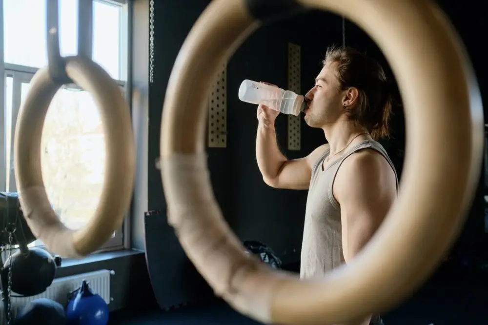

Articles / Tips & trends
Drink healthy with guilt free powders!
2021-02-22 · New products, News

What comes into mind when we talk about bubble tea? Creamy milk teas, brown sugar trickling down cups, colourful fruit teas, thick layers of cream top…not many people would think of “healthy”.
Indeed, bubble tea is often marked as high-sugar, high-calorie drinks which, while delicious, could put a toll on one’s health in the long run.
Not anymore! As society becomes more health-conscious, healthy bubble tea choices are becoming the rising star in the bubble tea market.
Many shops boast fruit teas made with fresh fruits rather than syrups, and others replace fructose with healthier choices to sweeten their brews. Some also promote special teas and fruits such as kombucha for their health benefits.
But what about milk teas and milk shakes? Are there ways to make them healthier?
Enter our Guilt-Free flavoured powders!
True to its name, our Guilt-Free healthy powders aim to provide you the chance to enjoy your favourite classic flavours without worrying about what goes into your body.
What’s so great about them? Here are the benefits:
Going Natural
Worried about artificial additives? We’ve got your back – our Guilt-free powders use natural colours and flavorings.
Just as tasty and colourful as any other bubble tea, but less chemicals!
Weight-friendly
Most milk teas are chock-full of fats and sugars…ours is not one of them.
By replacing sugars with healthy variants and creamers with low-fat versions, we can create low-fat, low sugar drinks. Delicious, yet light on the scales!
Nutrition-packed
Our powders are specially-designed with input from our in-house nutritionist, to make sure they are healthy and balanced.
Want to step it up further? We can also provide energy beverages, jam-packed with energy, proteins and vitamins for a power-boost!

For example, we have developed chocolate-flavoured drinks with added malt extract, and energy-filled drinks with added whey protein.
Milky, delicious and packs a punch!
Get yourself a healthy boost!
Want to learn more about our Guilt-free healthy powders?
Want to give it a try?
Take action by contacting us!